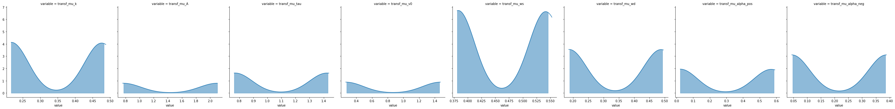

[1]:
import rlssm
import pandas as pd
import os
[2]:
par_path = os.path.abspath(os.path.join(os.getcwd(), os.pardir))
data_path = os.path.join(par_path, 'data/data_experiment.csv')
data = pd.read_csv(data_path, index_col=0)
data = data[data.participant < 5].reset_index(drop=True)
data['block_label'] += 1
data
INFO:numexpr.utils:NumExpr defaulting to 4 threads.
[2]:
| participant | block_label | trial_block | f_cor | f_inc | cor_option | inc_option | times_seen | rt | accuracy | |
|---|---|---|---|---|---|---|---|---|---|---|
| 0 | 1 | 1.0 | 1.0 | 43.0 | 39.0 | 2 | 1 | 1.0 | 1.244082 | 0.0 |
| 1 | 1 | 1.0 | 2.0 | 60.0 | 50.0 | 4 | 3 | 1.0 | 1.101821 | 1.0 |
| 2 | 1 | 1.0 | 3.0 | 44.0 | 36.0 | 4 | 2 | 2.0 | 1.029923 | 0.0 |
| 3 | 1 | 1.0 | 4.0 | 55.0 | 55.0 | 4 | 3 | 2.5 | 1.368007 | 0.0 |
| 4 | 1 | 1.0 | 5.0 | 52.0 | 49.0 | 4 | 3 | 3.5 | 1.039329 | 1.0 |
| ... | ... | ... | ... | ... | ... | ... | ... | ... | ... | ... |
| 953 | 4 | 3.0 | 75.0 | 51.0 | 44.0 | 3 | 1 | 37.0 | 1.396425 | 1.0 |
| 954 | 4 | 3.0 | 76.0 | 57.0 | 33.0 | 3 | 1 | 38.0 | 1.208049 | 1.0 |
| 955 | 4 | 3.0 | 77.0 | 42.0 | 30.0 | 3 | 1 | 39.0 | 1.276406 | 1.0 |
| 956 | 4 | 3.0 | 78.0 | 41.0 | 42.0 | 2 | 1 | 38.5 | 1.530143 | 0.0 |
| 957 | 4 | 3.0 | 79.0 | 46.0 | 36.0 | 4 | 2 | 39.5 | 1.269675 | 1.0 |
958 rows × 10 columns
[3]:
model = rlssm.RLALBAModel_2A(2,
separate_learning_rates=True)
INFO:pystan:COMPILING THE C++ CODE FOR MODEL anon_model_ce8f71c7f8e8ecc9e5cfc25fcfe29b81 NOW.
[4]:
model.family, model.model_label, model.hierarchical_levels
[4]:
('RLALBA_2A', 'hierRLALBA_2A_2lr', 2)
Fit¶
[5]:
# sampling parameters
n_iter = 700
n_chains = 2
n_thin = 5
# learning parameters
K = 4 # n options
initial_value_learning = 17.5 # intitial value (Q0)
[6]:
model_fit = model.fit(data,
K,
initial_value_learning,
thin = n_thin,
iter = n_iter,
chains = n_chains,
print_diagnostics = False)
WARNING:pystan:Maximum (flat) parameter count (1000) exceeded: skipping diagnostic tests for n_eff and Rhat.
To run all diagnostics call pystan.check_hmc_diagnostics(fit)
WARNING:pystan:75 of 140 iterations ended with a divergence (53.6 %).
WARNING:pystan:Try running with adapt_delta larger than 0.8 to remove the divergences.
WARNING:pystan:63 of 140 iterations saturated the maximum tree depth of 10 (45 %)
WARNING:pystan:Run again with max_treedepth larger than 10 to avoid saturation
WARNING:pystan:Chain 1: E-BFMI = 0.00522
WARNING:pystan:E-BFMI below 0.2 indicates you may need to reparameterize your model
Get Rhat¶
[7]:
model_fit.rhat.describe()
[7]:
| rhat | |
|---|---|
| count | 48.000000 |
| mean | 115.182151 |
| std | 97.338975 |
| min | 10.210547 |
| 25% | 41.907860 |
| 50% | 91.392335 |
| 75% | 160.936691 |
| max | 444.399267 |
[8]:
model_fit.rhat.head()
[8]:
| rhat | variable | |
|---|---|---|
| 0 | 51.223721 | mu_k |
| 1 | 196.165013 | mu_A |
| 2 | 64.065411 | mu_tau |
| 3 | 444.399267 | mu_v0 |
| 4 | 29.971135 | mu_ws |
Calculate wAIC¶
[9]:
model_fit.waic
[9]:
{'lppd': -11142.278069498156,
'p_waic': 57849.47291953988,
'waic': 137983.50197807606,
'waic_se': 3071.9447652163726}
Check divergences¶
[ ]:
Get posteriors¶
[10]:
model_fit.samples
[10]:
| chain | draw | transf_mu_k | transf_mu_A | transf_mu_tau | transf_mu_v0 | transf_mu_ws | transf_mu_wd | transf_mu_alpha_pos | transf_mu_alpha_neg | ... | wd_sbj[3] | wd_sbj[4] | alpha_pos_sbj[1] | alpha_pos_sbj[2] | alpha_pos_sbj[3] | alpha_pos_sbj[4] | alpha_neg_sbj[1] | alpha_neg_sbj[2] | alpha_neg_sbj[3] | alpha_neg_sbj[4] | |
|---|---|---|---|---|---|---|---|---|---|---|---|---|---|---|---|---|---|---|---|---|---|
| 0 | 0 | 48 | 0.217536 | 2.101332 | 0.765928 | 1.468525 | 0.382037 | 0.186982 | 0.021836 | 0.388562 | ... | 0.217188 | 0.239975 | 0.116446 | 0.079561 | 0.003558 | 0.037586 | 0.509103 | 0.806137 | 0.731168 | 0.547213 |
| 1 | 0 | 50 | 0.217946 | 2.100752 | 0.765834 | 1.467941 | 0.382153 | 0.186729 | 0.021753 | 0.388168 | ... | 0.216930 | 0.239762 | 0.116295 | 0.079460 | 0.003533 | 0.037429 | 0.508337 | 0.806308 | 0.731729 | 0.547246 |
| 2 | 0 | 67 | 0.218653 | 2.101299 | 0.764045 | 1.469368 | 0.381218 | 0.185912 | 0.021729 | 0.388179 | ... | 0.216068 | 0.238885 | 0.116054 | 0.079352 | 0.003531 | 0.037419 | 0.508823 | 0.806309 | 0.730047 | 0.546118 |
| 3 | 0 | 43 | 0.217558 | 2.101478 | 0.768285 | 1.467687 | 0.382477 | 0.187023 | 0.021899 | 0.388212 | ... | 0.217215 | 0.240035 | 0.117165 | 0.079868 | 0.003567 | 0.037730 | 0.508176 | 0.806195 | 0.730837 | 0.546904 |
| 4 | 0 | 17 | 0.217172 | 2.100470 | 0.773882 | 1.470296 | 0.384316 | 0.188334 | 0.022091 | 0.387985 | ... | 0.218873 | 0.241788 | 0.118002 | 0.080407 | 0.003584 | 0.038118 | 0.508218 | 0.807434 | 0.730703 | 0.546451 |
| ... | ... | ... | ... | ... | ... | ... | ... | ... | ... | ... | ... | ... | ... | ... | ... | ... | ... | ... | ... | ... | ... |
| 135 | 1 | 69 | 0.481371 | 0.774684 | 1.409268 | 0.268458 | 0.544946 | 0.484534 | 0.588545 | 0.044157 | ... | 0.865536 | 0.884575 | 0.627890 | 0.543164 | 0.604135 | 0.654787 | 0.021330 | 0.057608 | 0.084375 | 0.088108 |
| 136 | 1 | 41 | 0.479030 | 0.768026 | 1.430501 | 0.271614 | 0.544134 | 0.487387 | 0.574356 | 0.044066 | ... | 0.866004 | 0.894507 | 0.610175 | 0.526735 | 0.590988 | 0.641307 | 0.021049 | 0.058513 | 0.086544 | 0.090117 |
| 137 | 1 | 4 | 0.460944 | 0.772124 | 1.412920 | 0.268940 | 0.542210 | 0.490969 | 0.551850 | 0.044593 | ... | 0.864720 | 0.898097 | 0.590764 | 0.502254 | 0.566826 | 0.618268 | 0.022892 | 0.059204 | 0.083035 | 0.086061 |
| 138 | 1 | 9 | 0.467047 | 0.768596 | 1.413539 | 0.268031 | 0.543669 | 0.494134 | 0.552905 | 0.045643 | ... | 0.873309 | 0.908997 | 0.591415 | 0.503771 | 0.567576 | 0.619858 | 0.023113 | 0.060709 | 0.085212 | 0.088503 |
| 139 | 1 | 59 | 0.484958 | 0.776660 | 1.414590 | 0.269323 | 0.543723 | 0.480593 | 0.585720 | 0.044687 | ... | 0.857166 | 0.873379 | 0.623722 | 0.539984 | 0.602202 | 0.652032 | 0.021731 | 0.057584 | 0.084817 | 0.088933 |
140 rows × 42 columns
[11]:
model_fit.trial_samples
[11]:
OrderedDict([('k_t',
array([[1.51631122, 1.51631122, 1.51631122, ..., 1.32807325, 1.32807325,
1.32807325],
[1.5236482 , 1.5236482 , 1.5236482 , ..., 1.33560165, 1.33560165,
1.33560165],
[1.53603346, 1.53603346, 1.53603346, ..., 1.34604989, 1.34604989,
1.34604989],
...,
[1.91722008, 1.91722008, 1.91722008, ..., 4.18646786, 4.18646786,
4.18646786],
[1.8670812 , 1.8670812 , 1.8670812 , ..., 4.12869949, 4.12869949,
4.12869949],
[1.99606028, 1.99606028, 1.99606028, ..., 4.38455061, 4.38455061,
4.38455061]])),
('A_t',
array([[3.51590096, 3.51590096, 3.51590096, ..., 0.82377916, 0.82377916,
0.82377916],
[3.51459896, 3.51459896, 3.51459896, ..., 0.82449383, 0.82449383,
0.82449383],
[3.51430368, 3.51430368, 3.51430368, ..., 0.82623506, 0.82623506,
0.82623506],
...,
[0.71807261, 0.71807261, 0.71807261, ..., 0.48589313, 0.48589313,
0.48589313],
[0.71045743, 0.71045743, 0.71045743, ..., 0.48435841, 0.48435841,
0.48435841],
[0.71536969, 0.71536969, 0.71536969, ..., 0.48877822, 0.48877822,
0.48877822]])),
('tau_t',
array([[0.18197989, 0.18197989, 0.18197989, ..., 1.06987967, 1.06987967,
1.06987967],
[0.18234652, 0.18234652, 0.18234652, ..., 1.0706358 , 1.0706358 ,
1.0706358 ],
[0.18366776, 0.18366776, 0.18366776, ..., 1.06655912, 1.06655912,
1.06655912],
...,
[2.05659585, 2.05659585, 2.05659585, ..., 3.30965495, 3.30965495,
3.30965495],
[2.06261057, 2.06261057, 2.06261057, ..., 3.31500657, 3.31500657,
3.31500657],
[2.05807553, 2.05807553, 2.05807553, ..., 3.27959021, 3.27959021,
3.27959021]])),
('drift_cor_t',
array([[ 2.58342063, 2.58342063, 3.03306302, ..., 9.99884047,
7.33126505, 10.08786187],
[ 2.57843083, 2.57843083, 3.02621418, ..., 9.94274397,
7.28218708, 10.02463781],
[ 2.56742029, 2.56742029, 3.01029535, ..., 9.79585032,
7.16056471, 9.86186424],
...,
[ 18.98505014, 18.98505014, 47.97897326, ..., 99.95622548,
83.34878907, 107.51905748],
[ 19.07812628, 19.07812628, 48.3102133 , ..., 99.98809137,
83.29408805, 107.5488304 ],
[ 19.32243923, 19.32243923, 50.28753741, ..., 99.33807655,
82.86679591, 106.83839303]])),
('drift_inc_t',
array([[ 2.58342063, 2.58342063, 2.42993723, ..., 2.63939828,
4.27618863, 3.73231527],
[ 2.57843083, 2.57843083, 2.42481515, ..., 2.58948956,
4.23208617, 3.67510148],
[ 2.56742029, 2.56742029, 2.41293599, ..., 2.4723018 ,
4.12167867, 3.53643356],
...,
[18.98505014, 18.98505014, 33.29073463, ..., 76.95196289,
75.0307832 , 82.57130561],
[19.07812628, 19.07812628, 33.40619203, ..., 76.66425118,
74.79048801, 82.27908503],
[19.32243923, 19.32243923, 34.90126155, ..., 76.77500081,
74.64060791, 82.40165836]]))])
[12]:
model_fit.plot_posteriors(height=5, show_intervals='HDI');

[ ]:
Posterior predictives¶
[13]:
import numpy as np
import seaborn as sns
[14]:
data['choice_pair'] = 'AB'
data.loc[(data.cor_option == 3) & (data.inc_option == 1), 'choice_pair'] = 'AC'
data.loc[(data.cor_option == 4) & (data.inc_option == 2), 'choice_pair'] = 'BD'
data.loc[(data.cor_option == 4) & (data.inc_option == 3), 'choice_pair'] = 'CD'
data['block_bins'] = pd.cut(data.trial_block, 8, labels=np.arange(1, 9))
[15]:
data.head()
[15]:
| index | participant | block_label | trial_block | f_cor | f_inc | cor_option | inc_option | times_seen | rt | accuracy | accuracy_rescale | choice_pair | block_bins | |
|---|---|---|---|---|---|---|---|---|---|---|---|---|---|---|
| 0 | 0 | 1 | 1.0 | 1.0 | 43.0 | 39.0 | 2 | 1 | 1.0 | 1.244082 | 0.0 | 2 | AB | 1 |
| 1 | 1 | 1 | 1.0 | 2.0 | 60.0 | 50.0 | 4 | 3 | 1.0 | 1.101821 | 1.0 | 1 | CD | 1 |
| 2 | 2 | 1 | 1.0 | 3.0 | 44.0 | 36.0 | 4 | 2 | 2.0 | 1.029923 | 0.0 | 2 | BD | 1 |
| 3 | 3 | 1 | 1.0 | 4.0 | 55.0 | 55.0 | 4 | 3 | 2.5 | 1.368007 | 0.0 | 2 | CD | 1 |
| 4 | 4 | 1 | 1.0 | 5.0 | 52.0 | 49.0 | 4 | 3 | 3.5 | 1.039329 | 1.0 | 1 | CD | 1 |
Ungrouped posterior predictives:¶
[16]:
pp = model_fit.get_posterior_predictives_df(n_posterior_predictives=100)
pp.head()
[16]:
| variable | rt | ... | accuracy | ||||||||||||||||||
|---|---|---|---|---|---|---|---|---|---|---|---|---|---|---|---|---|---|---|---|---|---|
| trial | 1 | 2 | 3 | 4 | 5 | 6 | 7 | 8 | 9 | 10 | ... | 949 | 950 | 951 | 952 | 953 | 954 | 955 | 956 | 957 | 958 |
| sample | |||||||||||||||||||||
| 1 | 0.794395 | 1.625882 | 1.205966 | 1.328296 | 1.767459 | 0.957269 | 0.607540 | 2.216015 | 0.703586 | 0.526114 | ... | 1.0 | 1.0 | 1.0 | 1.0 | 1.0 | 1.0 | 1.0 | 1.0 | 1.0 | 1.0 |
| 2 | 1.562922 | 0.890708 | 1.009029 | 0.736590 | 1.580536 | 0.748091 | 0.983010 | 0.549648 | 0.484222 | 1.486070 | ... | 1.0 | 1.0 | 1.0 | 1.0 | 1.0 | 1.0 | 1.0 | 1.0 | 1.0 | 1.0 |
| 3 | 0.635283 | 1.656078 | 1.042371 | 1.097449 | 1.006164 | 0.893031 | 1.150259 | 0.899893 | 0.598111 | 0.572809 | ... | 1.0 | 1.0 | 1.0 | 1.0 | 1.0 | 1.0 | 1.0 | 1.0 | 1.0 | 1.0 |
| 4 | 1.171252 | 0.720139 | 0.887419 | 1.048762 | 1.525210 | 0.756710 | 0.697516 | 1.251113 | 0.571763 | 0.915391 | ... | 1.0 | 1.0 | 1.0 | 1.0 | 1.0 | 1.0 | 1.0 | 1.0 | 1.0 | 1.0 |
| 5 | 1.242192 | 2.100110 | 0.804646 | 2.040574 | 1.034860 | 0.962563 | 1.858475 | 0.990839 | 1.214096 | 0.606030 | ... | 1.0 | 1.0 | 1.0 | 1.0 | 1.0 | 1.0 | 1.0 | 1.0 | 1.0 | 1.0 |
5 rows × 1916 columns
Grouped posterior predictives:¶
[17]:
pp_grouped = model_fit.get_grouped_posterior_predictives_summary(grouping_vars=['choice_pair', 'block_bins'],
n_posterior_predictives=100)
[18]:
pp_grouped.head()
[18]:
| mean_accuracy | mean_rt | skewness | quant_10_rt_incorrect | quant_10_rt_correct | quant_30_rt_incorrect | quant_30_rt_correct | quant_50_rt_incorrect | quant_50_rt_correct | quant_70_rt_incorrect | quant_70_rt_correct | quant_90_rt_incorrect | quant_90_rt_correct | |||
|---|---|---|---|---|---|---|---|---|---|---|---|---|---|---|---|
| choice_pair | block_bins | sample | |||||||||||||
| AB | 1 | 1 | 0.724138 | 1.544961 | 0.672101 | 1.136826 | 1.144994 | 1.553643 | 1.226411 | 2.023943 | 1.326775 | 2.469264 | 1.386166 | 2.473546 | 2.467744 |
| 2 | 0.655172 | 1.523814 | 0.797589 | 1.171685 | 1.063546 | 1.247593 | 1.143075 | 1.312623 | 1.316189 | 1.372205 | 1.602313 | 2.469955 | 2.475410 | ||
| 3 | 0.620690 | 1.506971 | 0.688315 | 1.292510 | 0.760827 | 1.323131 | 1.130016 | 1.346646 | 1.231271 | 1.459553 | 1.485831 | 2.460880 | 2.453121 | ||
| 4 | 0.551724 | 1.532994 | 0.897876 | 0.905428 | 1.129190 | 1.237646 | 1.239046 | 1.299485 | 1.359097 | 1.517830 | 1.402453 | 2.478700 | 2.474984 | ||
| 5 | 0.586207 | 1.613024 | 0.808738 | 1.171493 | 1.187995 | 1.227715 | 1.305676 | 1.304647 | 1.463774 | 1.402533 | 2.497160 | 1.455198 | 2.502388 |
Plot grouped posterior predictives:¶
[19]:
model_fit.plot_mean_grouped_posterior_predictives(
grouping_vars=['block_bins', 'choice_pair'],
n_posterior_predictives=300,
figsize=(20,8),
hue_labels=['ab', 'ac', 'bd', 'cd'],
hue_order=['AB', 'AC', 'BD', 'CD'],
palette= sns.color_palette('husl'));
/Users/Khamir/DecisionMaking/_Reports/_7/rlssm/rlssm/fits_race.py:242: UserWarning: Cannot have more posterior predictive samples than posterior samples. Will continue with n_posterior_predictives=140
pp_rt, pp_acc = self.get_posterior_predictives(n_posterior_predictives, **kwargs)

[20]:
model_fit.plot_mean_grouped_posterior_predictives(
grouping_vars=['block_bins'],
n_posterior_predictives=300,
figsize=(20,8));

Get starting values for further sampling¶
[21]:
sv = model_fit.last_values
sv
[21]:
| chain | draw | warmup | mu_A | mu_alpha_neg | mu_alpha_pos | mu_k | mu_tau | mu_v0 | mu_wd | ... | z_v0[3] | z_v0[4] | z_wd[1] | z_wd[2] | z_wd[3] | z_wd[4] | z_ws[1] | z_ws[2] | z_ws[3] | z_ws[4] | |
|---|---|---|---|---|---|---|---|---|---|---|---|---|---|---|---|---|---|---|---|---|---|
| 69 | 0 | 69 | 0 | 1.970199 | -0.283976 | -2.019572 | -1.408372 | 0.137063 | 1.207051 | -1.588902 | ... | 0.376481 | 1.905876 | -1.487621 | 0.729174 | 1.105609 | 1.855295 | -1.095475 | -0.888899 | 1.476514 | -0.727496 |
| 139 | 1 | 69 | 0 | 0.156923 | -1.704358 | 0.223805 | -0.480795 | 1.129129 | -1.177829 | -0.472537 | ... | -1.256968 | 0.682142 | 0.901413 | -2.004376 | 1.312314 | 1.366418 | 0.022060 | -0.805360 | 0.391267 | 1.969299 |
2 rows × 51 columns
[ ]: